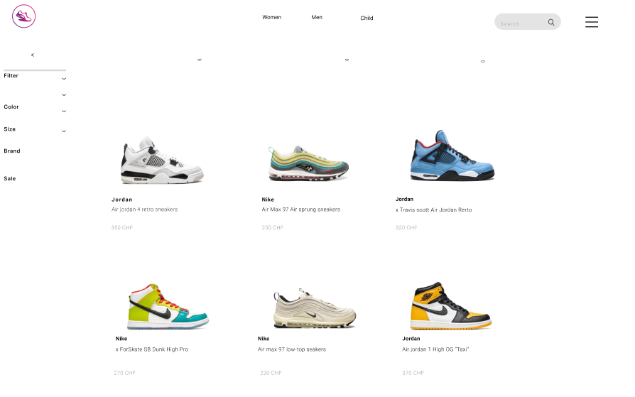
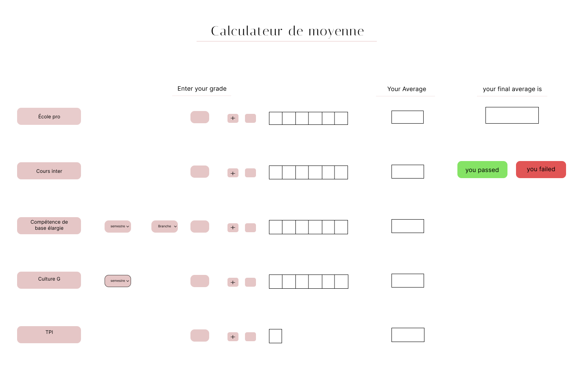

Projet Static
Ce projet est un site de vente de chaussures réalisé en HTML et CSS.
- Page d'accueil
- Page de produits
- Page de paiement

Projet Laravel avec PostgreSQL
Ce projet a été développé en utilisant le framework Laravel avec une base de données PostgreSQL.
- Système de connexion
- Système de commentaires (ajout et suppression)
- Système d'administration permettant aux utilisateurs d'ajouter, modifier et supprimer leurs articles
- Système de favoris

Calculateur de moyenne pour le CFC d'informaticien
Ce projet vise à créer un calculateur de moyenne pour le Certificat Fédéral de Capacité (CFC) d'informaticien en utilisant les langages de programmation PHP, HTML et CSS.
- Interface pour stocker les notes dans chaque branche
- Calcul de la moyenne respective de chaque branche
- Arrondissement nécessaire
- Calcul de la moyenne finale pour l'ensemble des branches

Projet Python avec PostgreSQL
L'objectif de ce projet est de stocker les montants dépensés dans chaque catégorie à l'aide de Python et d'une base de données PostgreSQL, puis de calculer la somme totale à la fin.
Voir sur GitHub